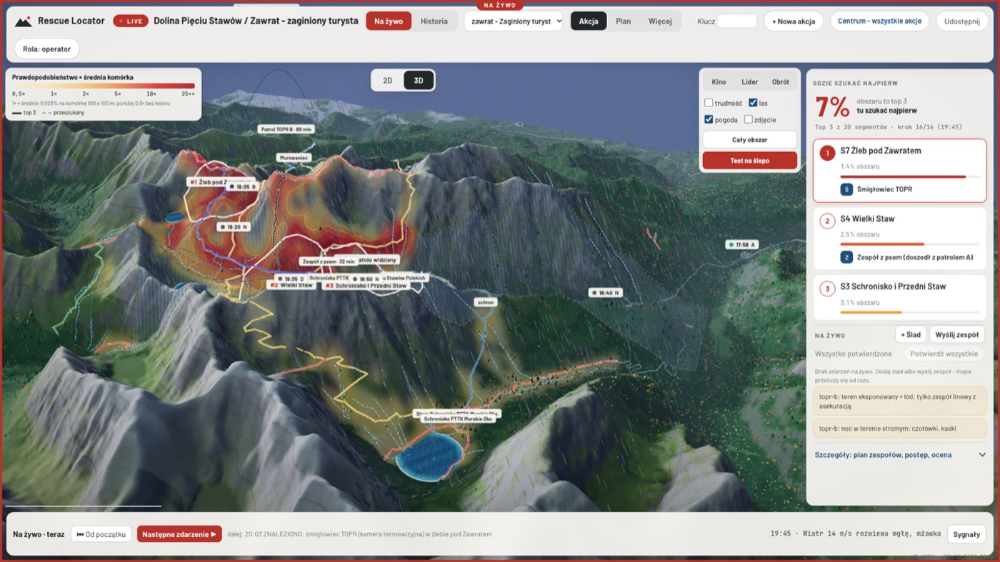
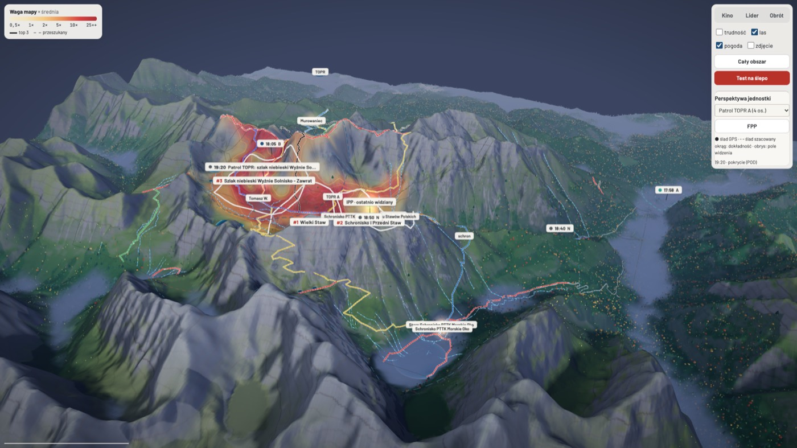
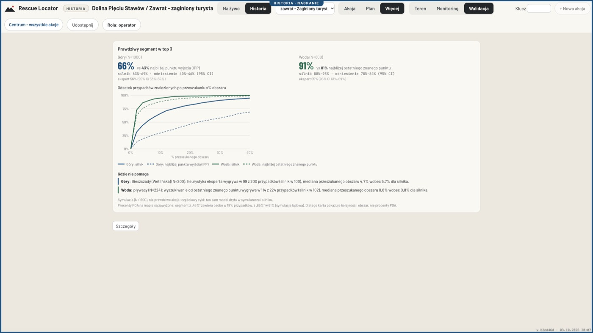
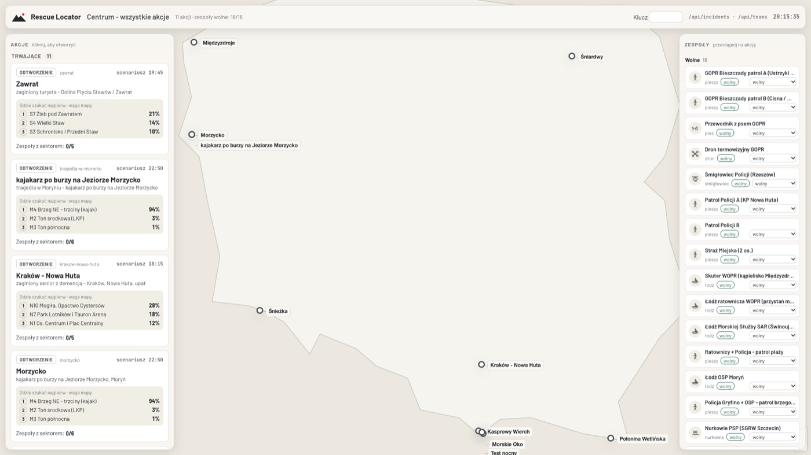
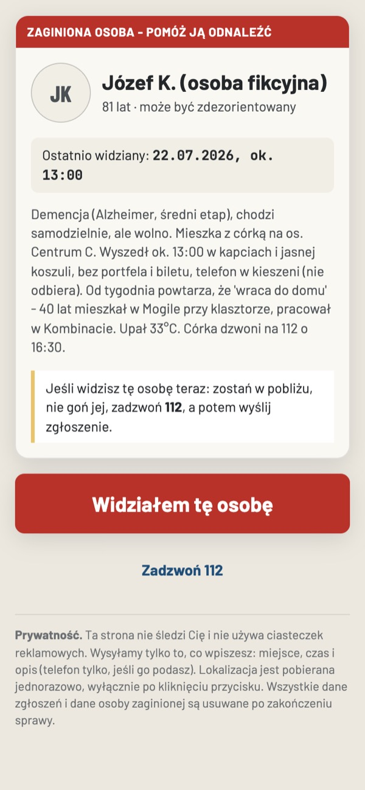

Gdzie szukać najpierw - w pierwszych godzinach akcji
Rescue Locator łączy statystykę zachowań zaginionych, teren i ślady z akcji w jedną mapę, która pokazuje, gdzie szukać najpierw. Mapa przelicza się sama z każdym meldunkiem. Decyzje podejmuje kierownik akcji.

Problem pierwszych godzin
Zgłoszenie przychodzi późno, ludzi jest mało, teren duży, pogoda się psuje. Kierownik akcji układa w głowie dziesiątki sygnałów: plan wycieczki, ostatni kontakt, logowanie telefonu, świadków, przeszukane już sektory. Rescue Locator zbiera je w jednym miejscu i liczy, które fragmenty terenu mają największą wagę.
Możliwe funkcje
Waga mapy z poszlak
Statystyka zachowań zaginionych (Koester / ISRID), teren z modelu wysokości, szlaki i potoki. Każda poszlaka ma wagę: wiarygodność źródła, dokładność, czas i potwierdzenia.
działa w pokazieOś czasu i pole widzenia
Trasy zespołów z GPS, szacowana droga między pozycjami i to, co widzi każda jednostka - także dron z kamerą termowizyjną. Z tego rośnie przeszukany obszar.
działa w pokazieNa żywo, Zasoby, dziennik
Zespół dołącza kodem QR, wysyła meldunki i ślady. Operator widzi stan zespołów (zmęczenie, bateria drona, paliwo) i dziennik każdej jednostki.
działa w pokazieCentrum i Doradca zagrożeń
Kilka akcji na jednej mapie i wspólna pula zespołów. Doradca podpowiada wspólną przyczynę zgłoszeń, np. falę po przerwaniu zapory na Solinie.
działa w pokazieĆwiczenia
Przejmij akcję w połowie, wysyłaj zespoły i porównaj decyzje z silnikiem, heurystyką eksperta i podejściem naiwnym.
działa w pokazieTryb Auto
Zdarzenia wpisywane zwykłym językiem, jak w czacie; aplikacja sama dobiera pogodę i dostępne zespoły.
w budowieAnaliza zdjęcia
Zdjęcie od zaginionego: lokalizacja z danych EXIF, a bez nich porównanie linii gór na zdjęciu z modelem terenu (na syntetycznym zdjęciu testowym z Zawratu ok. 60 m).
działa w pokaziedemo syntetyczneIntegracje
GPS z telefonów ratowników
Telefon patrolu wysyła pozycję co kilka minut, także z kolejką offline.
działa w pokazieMapy i teren
OpenStreetMap i Copernicus DEM - działa. Ortofotomapa i model terenu GUGiK - planowane.
działa w pokazieplanowaneAplikacja Ratunek
Ping GPS z telefonu zaginionego jako poszlaka na mapie.
w pokazie symulowaneTrackery GPS / APRS zespołów
Pozycje z urządzeń zespołów bez telefonu.
planowaneDron: telemetria i obraz
Bateria, pozycja i podgląd kamery termowizyjnej z drona.
planowane112: lokalizacja AML i SMS
Lokalizacja telefonu z połączenia alarmowego jako poszlaka z dokładnością.
planowaneIMGW: pogoda i ostrzeżenia
Dziś pogoda w scenariuszach jest wpisana ręcznie.
planowaneRaporty do CAD / systemu 112
Eksport przebiegu akcji i decyzji.
planowaneSytuacje
Zaginiony turysta w Tatrach
Mgła, wiatr, ostatni sygnał telefonu pod Zawratem.
Otwórz w aplikacjiDziecko w lesie
Rodzina z telefonami pomaga ratownikom nad Karpaczem.
Otwórz w aplikacjiGrzybiarz
Buczyna nad Przełęczą Wyżną w Bieszczadach.
Otwórz w aplikacjiOsoba z demencją
Upał, miasto - Kraków, Nowa Huta.
Otwórz w aplikacjiPowódź po przerwaniu zapory
Kilka akcji naraz w dolinie Sanu, Doradca łączy je w jedną przyczynę.
Otwórz w aplikacjiZamieć w Karkonoszach
Turysta w okolicy Śnieżki i Kotła Łomniczki. Lawina - bez scenariusza (planowane).
Otwórz w aplikacjiZaginiony na wodzie
Żeglarz na Śniardwach, pływak przy Międzyzdrojach.
Otwórz w aplikacji
Uczciwy dowód
Na 1000 symulowanych przypadkach w górach: jak często prawdziwy sektor jest w pierwszej trójce podpowiedzi.
Na wodzie (600 przypadków): 91% wobec 81%. Mediana obszaru do przeszukania do znalezienia: 5,5% wobec 22,6% przy szukaniu od punktu wyjścia.
To symulacja, nie prawdziwe akcje. Symulator i silnik powstały w tym samym zespole, więc to test spójności, a nie walidacja w terenie. Procenty na mapie to waga, nie szansa - są zawyżone, dlatego pokazujemy kolejność i obszar. Są miejsca, gdzie nie pomaga (np. Bieszczady, pływak na jeziorze) - piszemy o nich w aplikacji, zakładka Walidacja.


Jak spróbować
- Strona startowa - krótki pokaz z przewodnikiem po akcji na Zawracie.
- Aplikacja operatora - przełącz 2D / 3D, w widoku 3D przycisk Kino odtwarza akcję jak film.
- Centrum - kilka akcji naraz.
- Lokalnie z repozytorium:
bash docs/submission/hackathon/rescue-locator/v4/start.sh. Wersja publiczna używa modelu językowego w chmurze; bez niego meldunki i ocena idą z reguł.
Wszystkie akcje w pokazie są fikcyjne. Aplikacja to narzędzie pomocnicze - nie zastępuje doświadczenia kierownika akcji ani procedur służb.
Zgubiłeś kogoś? Dzwoń 112
Nie czekaj do rana. Ratownicy wolą przyjechać niepotrzebnie niż za późno.
Numery wg topr.pl, gopr.pl i gov.pl (stan na 3.10.2026). TOPR: przy słabym zasięgu lub jego braku dzwoń na 112.
Nie szukaj sam po zmroku
Po zmroku, we mgle i w trudnym terenie łatwo samemu stać się drugą osobą do ratowania. Zostań w bezpiecznym miejscu, miej telefon przy sobie i odbieraj połączenia od ratowników.
Jeśli szukasz w dzień przy szlaku - nigdy w pojedynkę, powiedz komuś, gdzie idziesz, i dzwoń, gdy coś znajdziesz. Nie ruszaj znalezionych rzeczy.
Co powiedzieć ratownikom
- Kto: wiek, stan zdrowia, leki, doświadczenie w górach lub w wodzie.
- Gdzie i kiedy: miejsce i godzina ostatniego kontaktu, planowana trasa, gdzie stoi auto.
- Jak wygląda: ubiór i jego kolory, plecak, obuwie.
- Telefon: numer, operator, ile baterii, czy jest włączony.
- Sprzęt: latarka, ciepłe ubranie, jedzenie, woda.
Przed wyjściem w góry
- Zostaw komuś trasę i godzinę powrotu.
- Naładuj telefon, weź powerbank i czołówkę.
- Zainstaluj darmową aplikację Ratunek (polecaną przez GOPR) - przyda się, gdy trzeba wezwać pomoc.
- Sprawdź pogodę i komunikaty ratowników. We mgle nie schodź ze szlaku.
Tak ratownicy mogliby poprosić o pomoc mieszkańców
W demonstracji Rescue Locator ma stronę "Widziałem": karta osoby zaginionej i przycisk do zgłoszenia obserwacji z lokalizacją. Ratownicy dostają je od razu na mapie.
To pokaz z fikcyjną osobą, nie prawdziwa usługa. Jeśli naprawdę widzisz zaginioną osobę - zadzwoń na 112.

Czym jest Rescue Locator
Pomaga ratownikom m.in. gdy zgubi się dziecko w lesie, senior z demencją w mieście, turysta we mgle w górach albo ktoś na wodzie.
To narzędzie dla ratowników: podpowiada, gdzie szukać najpierw, na podstawie statystyk, terenu i śladów. Szukają zawsze ratownicy - aplikacja nikogo sama nie znajdzie i nie zastępuje telefonu na 112.
Prototyp z hackathonu HackYeah 2026. Wszystkie akcje w pokazie są fikcyjne.